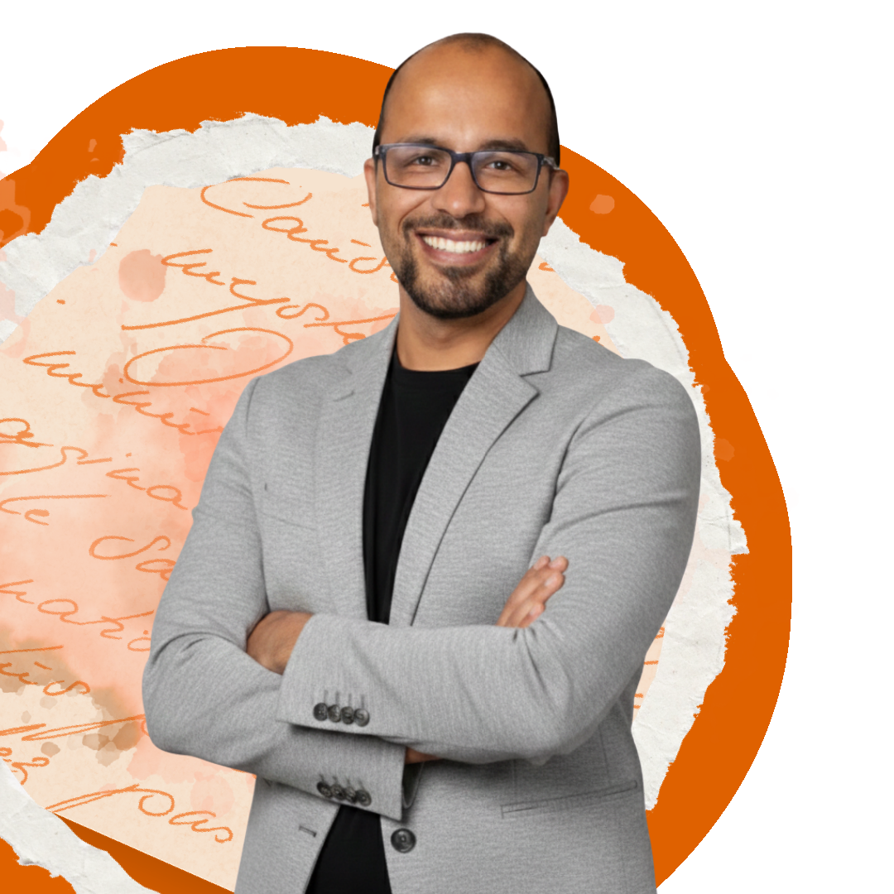
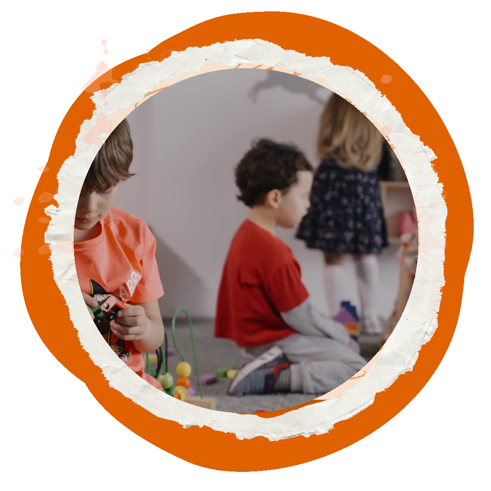

Você registra, mas não sabe por onde retomar.
As observações ficam guardadas, sem orientar a próxima escolha pedagógica.
Registro e Documentação Pedagógica · encontro ao vivo
Registrei. E agora? Como o registro transforma a prática pedagógica
Uma conversa para transformar o cotidiano documentado em ponto de partida para escolhas, percursos e novas possibilidades de aprendizagem.
Inscrição rápida · informações no e-mail cadastrado · certificado de participação
Inscrição gratuita
Preencha seus dados. Você receberá as informações da live e do certificado.

Com o Prof. Dr. Cristiano Alcântara
Professor, coordenador pedagógico e pesquisador, Cristiano reúne experiência em formação de professores, gestão escolar e documentação pedagógica.
Talvez isso esteja acontecendo
O registro pode ser mais do que memória ou exigência institucional. Ele pode ajudar a enxergar o que pede continuidade na sala de aula.
As observações ficam guardadas, sem orientar a próxima escolha pedagógica.
Entre demandas, planejamentos e devolutivas, os sinais importantes podem passar despercebidos.
Decisões mais coerentes começam quando o professor consegue ler o que os alunos vivem, expressam e aprendem.
A proposta da live
Em uma transmissão ao vivo com o Prof. Dr. Cristiano Alcântara, você vai refletir sobre como o registro pedagógico pode sustentar práticas alinhadas às necessidades reais da sala de aula.
Quero entrar nessa conversaReconhecer o cotidiano documentado como ponto de partida.
Revisitar registros para identificar lacunas e caminhos de continuidade.
Transformar a leitura em decisões mais coerentes para a prática.
Para quem é esta live
Esta conversa é voltada para professores da Educação Infantil e dos anos iniciais do Ensino Fundamental que lidam com exigências institucionais e curriculares sobre registro e documentação pedagógica.
Também se dirige a coordenadores pedagógicos que acompanham registros, orientam o trabalho docente e buscam critérios mais claros para suas devolutivas.
Sim, essa conversa é para mim
É simples participar
Preencha o formulário com seus dados de contato.
Acompanhe seu e-mail e o grupo da comunidade.
Encontre a gente no YouTube em 26/08, às 19h30.
Dúvidas rápidas
Se ainda faltar alguma informação, use o formulário para receber os próximos detalhes da equipe.
Sim. A inscrição e a participação na transmissão ao vivo são gratuitas.
A transmissão será realizada pelo YouTube. As informações serão encaminhadas após o cadastro.
Professores da Educação Infantil, profissionais dos anos iniciais do Ensino Fundamental e coordenadores pedagógicos são o público principal desta conversa.
Sim. O briefing da live prevê certificado de participação.
Não. A pergunta ajuda a entender o perfil da comunidade, mas a conversa também é relevante para profissionais dos anos iniciais e coordenação pedagógica.
A próxima leitura começa aqui
Inscreva-se para acompanhar uma conversa sobre observação, reflexão e escolhas pedagógicas mais conscientes.
Quero participar gratuitamente 26/08 · 19h30 · Ao vivo pelo YouTube · Com certificado